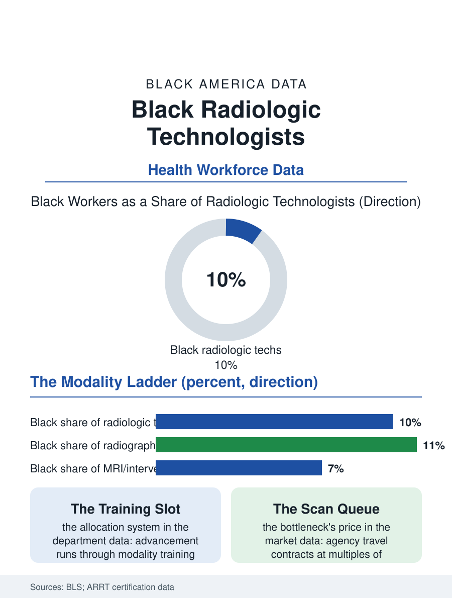

Black Employment
The Credentialed Eye: Black Radiologic Technologists
Imaging technologists produce the pictures diagnosis rides on, face a repricing shortage, and thin toward the summit specialties. The imaging file.

Behind nearly every image in modern medicine stands a radiologic technologist: the professional who positions the patient, sets the exposure, and produces the X-ray, CT, mammogram, or MRI on which the diagnosis rides. Black workers hold roughly ten of every hundred of these positions in the federal counts, in a licensed occupation of a quarter-million whose shortages move hospital wait times directly. This article reads the imaging file.
The Credentialed Eye
The pipeline runs through accredited two-year and four-year programs teaching anatomy, physics, and patient care together, ending in the national registry examination, the ARRT credential that functions as the occupation's passport. Black enrollment in radiography programs runs modestly below the population share, with the programs' clinical placement geography, students rotate through the hospitals that host them, again mediating who pictures themselves in the profession. The occupation's internal specialties stratify by pay and prestige in a legible order: radiography at the base, then CT and mammography, then MRI and interventional radiography at the summit, where the technologist works beside the physician inside the procedure. The workforce data show Black technologists distributed across the base and thinning toward the summit specialties, the advancement pattern of an occupation whose promotions run through the modality training slots departments allocate, another of this atlas's quiet allocation systems. Mammography deserves its specific line: the technologist who performs the screening mammogram holds the breast cancer file's front door in her hands, and the workforce's composition in that specialty, heavily female and including a substantial Black share in the urban systems, intersects the screening experience itself, the comfort and trust that decide whether the patient returns for the next year's image.
The Department's Economics
Imaging is the hospital's profit and bottleneck at once, and the technologist shortage of the recent years, driven by pandemic attrition and the imaging volume's relentless growth, has repriced the occupation sharply: sign-on bonuses, weekend differentials, and agency travel contracts at multiples of staff wages in the tight markets. The shortage's distribution is the access file's geography, the rural and safety-net departments least able to match the agency rates and therefore longest in their queues, so that the wait for a scan becomes one more variable in the diagnostic delay data of the health files. The radiation safety culture is the profession's ethical core, the discipline of the lowest reasonable dose, and its occupational exposure data are among medicine's best monitored, a model of a hazard honestly managed. Artificial intelligence has arrived in the reading room before the scanning room, prioritizing worklists and flagging findings, and the file's assessment is that the technologist's judgment, positioning the difficult patient, recognizing the emergency on the table, calming the frightened child, is the automation-resistant core the workforce planners now advertise to recruits, accurately.
The Image and the Imaged
There is a representation layer in this file that the numbers only begin to carry. The patient on the table is at her most vulnerable, undressed, in pain, frightened of the result, and the professional who handles her is, for those minutes, the whole health system's face; the patient experience literature records what common sense knows, that being imaged by someone who treats your body as ordinary is a clinical good, and that for Black patients the ordinary has not always been on offer. The profession's growth projections are among health care's strongest, imaging volume compounding with the aging population, and its training capacity, like respiratory therapy's, is capped by clinical slots, which makes the allocation of those slots in the urban teaching hospitals a workforce decision with a thirty-year shadow. The imaging file closes in the darkened control room, where the technologist watches the slices assemble into the inside of a stranger and makes the judgment the radiologist will build on: this image is diagnostic, or we go again. A quarter-million such judgments a day constitute American diagnosis's foundation, and a tenth of them are made by Black hands and eyes the training system nearly didn't produce. The file's arithmetic for the next decade is simple: the volume is coming whether the workforce does or not, and the queue times in the safety-net departments will report, scan by scan, whether it did.
More in Black Employment
The Black Unemployment Rate: The Two-to-One Pattern
Black unemployment runs at roughly twice the White rate — 5.5 percent against 3.3 percent in annual averages — a ratio stable across five decades of federal data. How it is measured and why it persists.
Black Median Weekly Earnings: The 80-Cent Ratio
Black full-time workers earn a median of about $900 a week — roughly 80 cents for every dollar White workers earn. The BLS earnings data by group, gender, and occupation.
Black Labor Force Participation: Working at National Rates
Black labor force participation runs at roughly the national rate — and Black women participate at higher rates than White women. The BLS participation data.
Source: U.S. Bureau of Labor Statistics, Current Population Survey; American Registry of Radiologic Technologists certification data; ASRT workforce surveys.